Portfolio · 2025
Progetti reali. Trasformazioni concrete.
Una selezione dei lavori che raccontano come trasformiamo identità, comunicazione e reputazione in valore concreto. Esplora l’indice: ogni progetto apre il percorso completo, dai dati ai risultati.
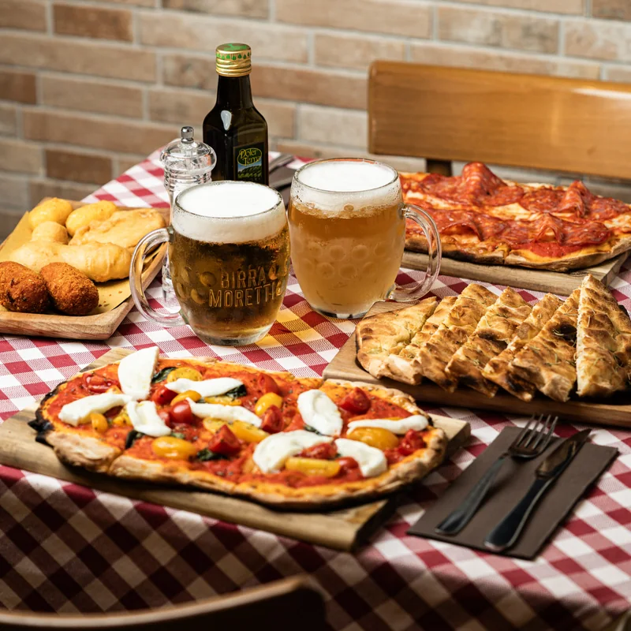
Mastrociccia Strategy · Performance +295% prenotazioni in 12 mesi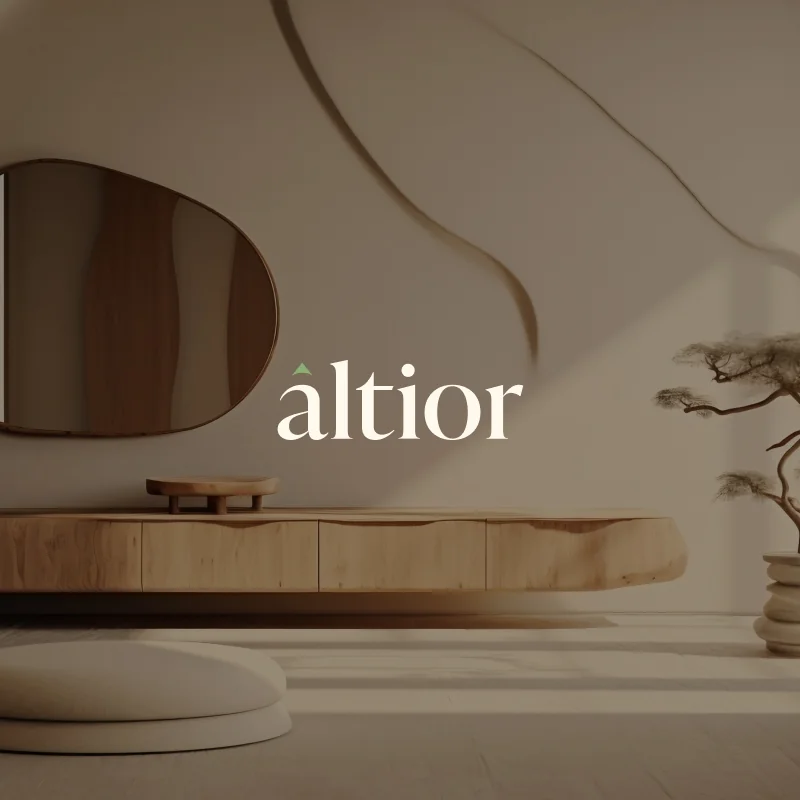
Altior Lead generation · Strategy 46 lead · 100.000€+ di ritorno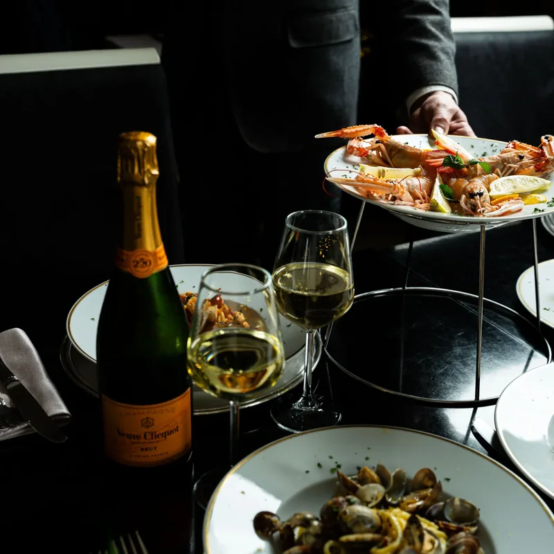
Di Rienzo Strategy · Performance 70 anni di storia, una nuova percezione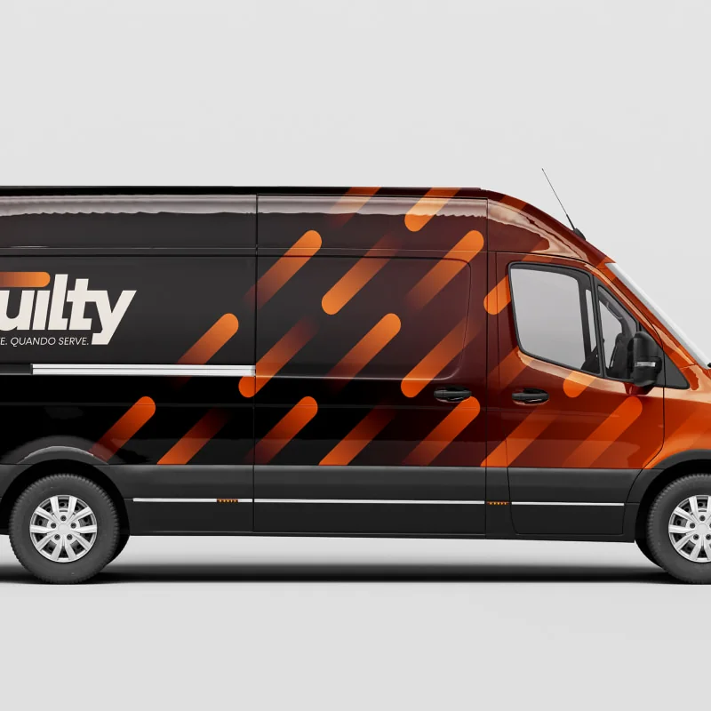
Builty Branding Brand identity · Ecosistema visivo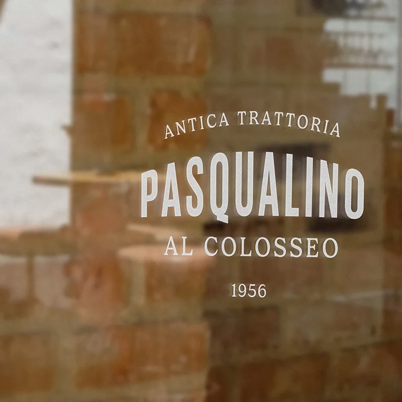
Pasqualino al Colosseo Branding Dal 1956 · Identità e tone of voice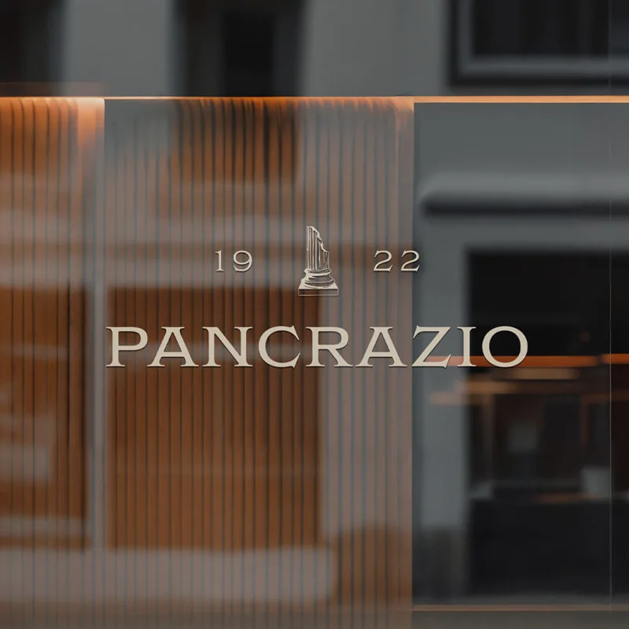
Pancrazio Branding Brand identity · Genius loci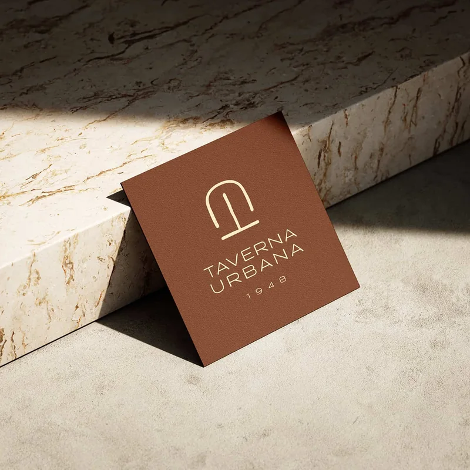
Taverna Urbana Branding Brand identity · Strategia di territorioNessun progetto in questa categoria. Prova un altro filtro.
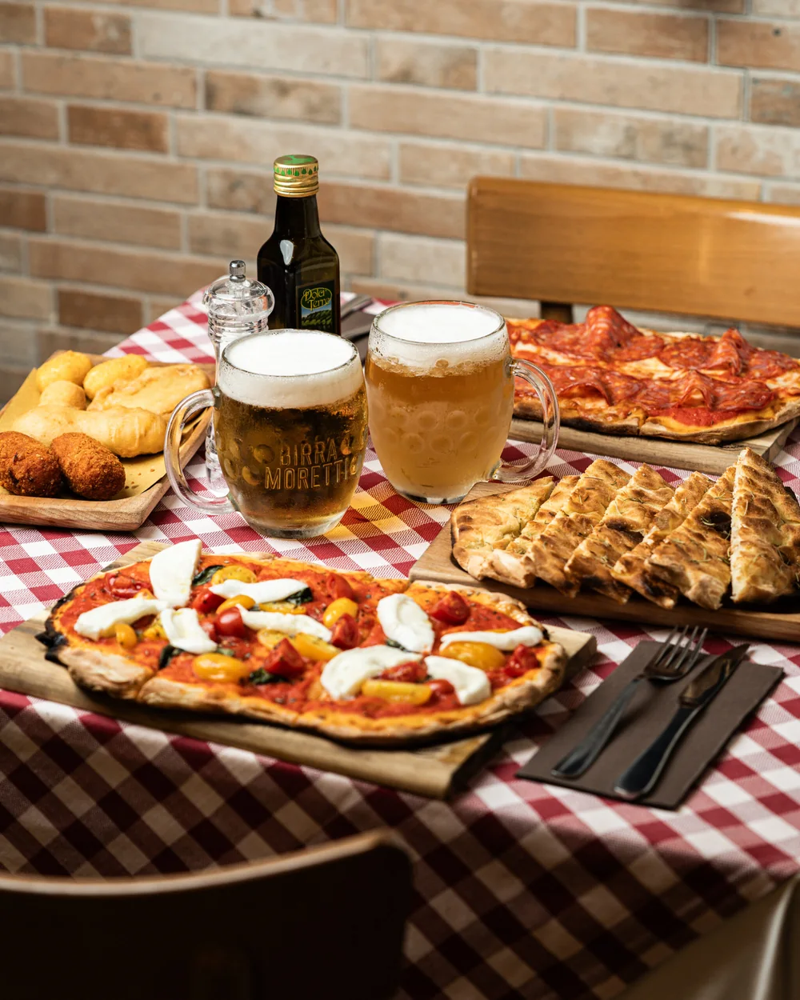
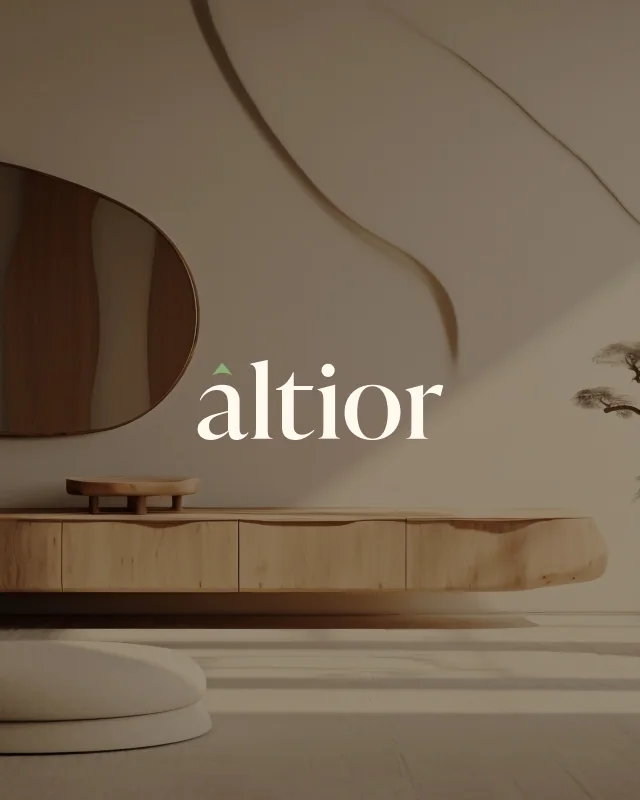
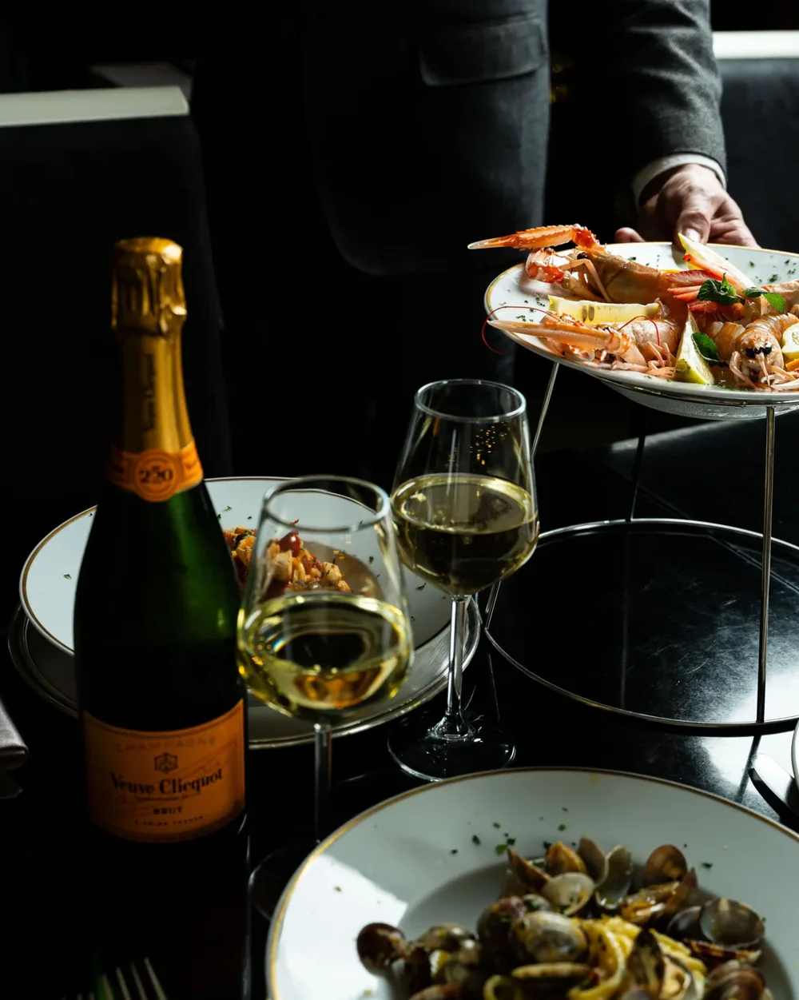
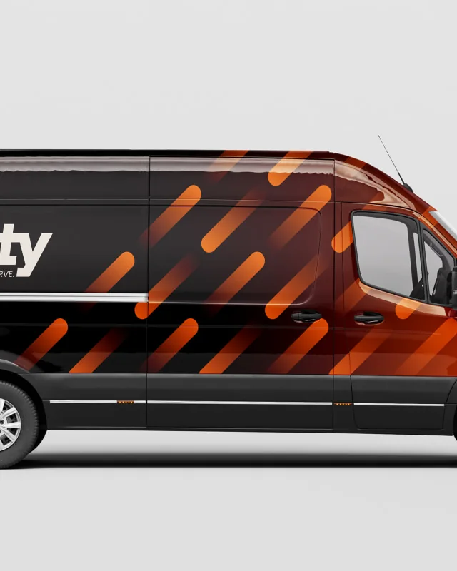
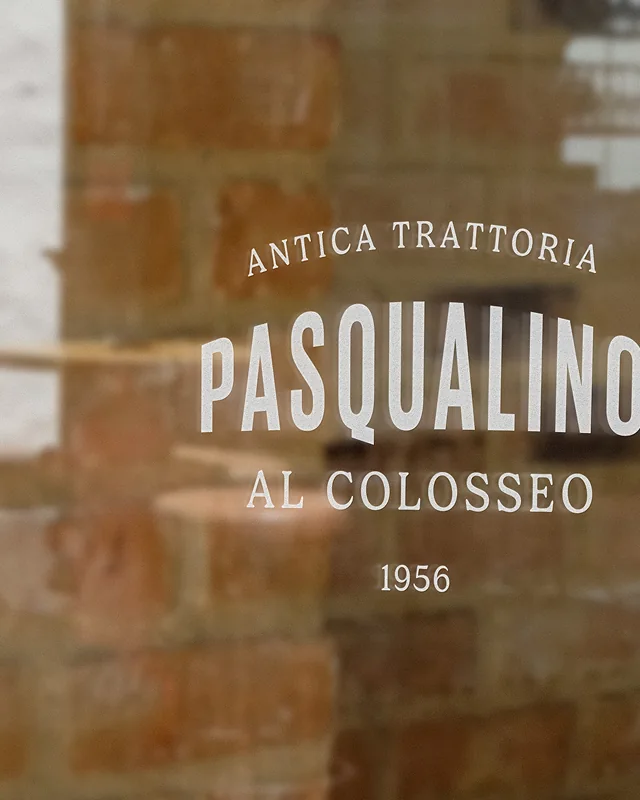

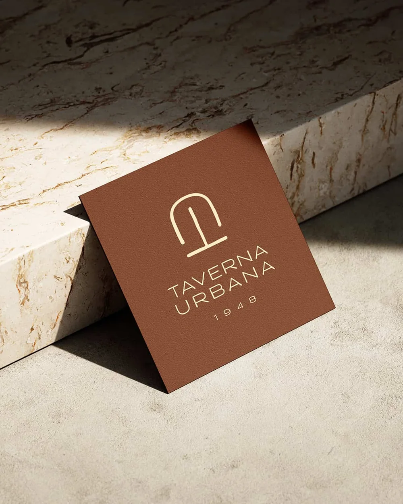
Il prossimo progetto
Il prossimo caso studio potrebbe essere il tuo.
Esperienza immersiva
Tutti i progetti. Un solo viaggio.
Non un elenco: un percorso a schermo intero dentro identità, campagne e risultati. Scorri, trascina, lascia che ogni progetto racconti il proprio prima e dopo.
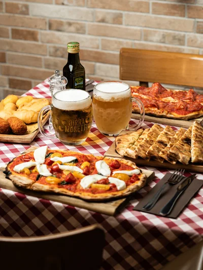


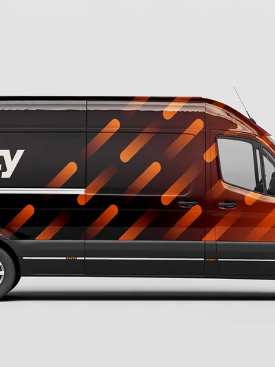


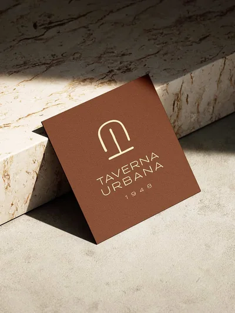
Comincia da qui
Costruiamo il tuo prossimo risultato.
Desideri un partner che ti affianchi in ogni scelta strategica? Parlaci delle tue esigenze: trasformeremo i tuoi obiettivi in risultati misurabili.